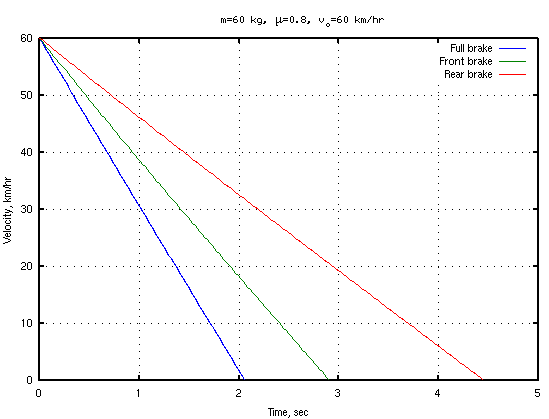

Contents | About | Contact
Closed-form Method to Evaluate Bike Braking Performance: Editor's Notes
Introduction
HPeJ is pleased to publish this ground-breaking paper by Junghsen Lieh! While the basic assumptions are well known, his method of analysis and the resulting equations are probably unique. Most readers will not be able to follow the derivations and may find the resulting equations too cumbersome to use with a manual calculator, but the provided script(s) readily allow the detailed evaluation of the braking performance of most vehicles by changing input values and running on a PC. These notes show that the scope is not just road vehicles, but also guided rail vehicles and by some stretch of imagination, even human powered tree climbing apparatus!
Scripts
The original script is closed_form_brake_bike_sample.m. Unaltered, it will plot the four diagrams shown in figure 2 of the paper using Matlab. Other similar programs can also run the script, but may not be able to plot the four graphs. The following modified scripts plot one diagram each and have been tested to work with the open source program Octave. They sometimes also run on this online-version.
closed_form_brake_bike_velocity.m plots velocity vs. time.
closed_form_brake_bike_braking_distance.m plots distance vs. time.
closed_form_brake_bike_deceleration.m plots deceleration vs. time.
closed_form_brake_bike_braking_efficiency.m plots braking efficiency vs. time.
The output diagrams show three distinct cases: front (axis) braking only, rear (axis) braking only, and simultaneous both axis braking. They do not show the simultaneous front and rear brake performance during the full brake case.
Scope
The paper concentrates on vehicles which do not slide or tip over. The first condition is simply defined by the invariant choice of the coefficient of friction μ, both front and rear. The second condition has to do with μ and the mass and geometry of the vehicle, in particular the height of the center of mass (or center of gravity) h, to some extent also the aerodynamic parameters and the road gradient. In particular, if Wr (equation 2a in the full paper) becomes zero, the tip-over condition is reached and a cyclist would either have to ease up on the brakes or be tipped over the front wheel. How can this condition be identified?
Using the original data in the sample file, h is 0.4 m and the vehicle cannot tip. It is seen in figure 2 that if only one axis can be braked, the rear brake is the more effective one. Leaving all parameters as they are except h and changing this to 1 m, gives the following figure 5, which shows that the front brake alone is now more effective than the rear brake alone; the green (front brake) and red (rear brake) curves have roughly switched positions. The full brake (blue) curve is always the same, as this shows the maximum braking possible for a non-tipping road vehicle with the specified coefficient of friction. This implies that the distribution between front and rear braking is optimal.

Figure 5: Vehicle with higher center of mass: h = 1.0 m
If h is increased further to 1.2 m, figure 6 below shows the front-brake-alone curve approaching the full-brake curve. This means the rear wheel is almost completely unweighted and the tip-over condition almost reached. Actually it probably is already reached at high speeds in this graph, as we didn't adjust the height ha of the aerodynamic center of effort.
Figure 6: Vehicle nearing the tip-over condition with h = 1.2m
(Do not be confused as I was, that the rear wheel curve is not much flatter, tending toward very long times : this is the rear brake only curve and has nothing to do with the other cases. In fact, this curve shows that a vehicle will never tip over if only the rear brake is used, as the braking force is automatically diminished as the rear axis is unweighted. However this should not be used as an argument for not using front brakes.)
What happens if we increase h even further? Obviously at some point a normal road vehicle will tip over with hard front braking. In the case of a rail vehicle with vertically guided rear wheel(s), the vehicle can however not tip over. This might be for example a car from a roller coaster. The rear restraint allows the deceleration force to load up the front wheel(s) more and achieve a higher braking force. Figure 7 below shows the result when h increased to 1.5 m: the time needed to brake the vehicle is more than halved using the front brake alone. The rear brake alone however has become a little less effective (for a non-tipping road vehicle). The curve for full braking is no longer applicable, neither for road nor rail.
Figure 7: Tip-over condition exceeded with front-only braking with h = 1.5 m
What happens if the height of the center of mass is increased even further? The following figure 8 shows the result of h = 1.74 m. The stopping time with front-only braking is approaching zero, as almost all deceleration force is turned into braking force. Therefore by adjusting the vehicle geometry, a vertically-guided rail vehicle can achieve any desired braking force, even with poor coefficients of friction and without resorting to brakes which clamp onto the rails. Provided of course that the structure (and passengers) can withstand the large forces!
Figure 8: h= 1.74 m, indicating a very large front braking force and jamming above this value.
What happens if h is increased further? Using h = 1.75 m or more gives no more curves to plot, indicating a singularity. In practice it means the vehicle has jammed itself onto its rails. Clearly this is of no use dynamically, as huge inertial forces break the structure. However the principle is useful for quasi-static mechanical friction-lock devices e.g. for pulling ropes or climbing poles and trees. With a bit of lateral thinking, the script could be used to evaluate the required geometry of such a clamp, even if it could be considered a misuse of the elegant equations including inertial and aerodynamic forces, to solve a problem of statics!
Theo Schmidt 6.5.2013 (ed.)
Human Power eJournal